Guide · Southeast Asia · Vietnam · Hanoi and Sapa
Hanoi to Sapa, October 4 to 9, 2019: the night train, a waterfall, Fansipan, Cat Cat and a day by scooter
In October 2019 I flew from Manila to Hanoi, the capital of Vietnam, spent one day there, and took the overnight train to Sapa, a mountain town in the north. I slept in a hostel near the airport on the first night, in a boutique hotel in Sapa, and on October 8 at a local guide's home. This page covers October 4 to 9.
In short: a hostel by the airport, a Grab ride into the city, a SIM card, a train ticket booked on my phone that evening, the night train, a shared minibus up the mountain, a day in Sapa, then a waterfall and the Fansipan cable car, a day in Cat Cat village and a night at a local guide's home, then a day on a scooter north of Sapa with a temple and a show at the cable car station, with what each of those costs today. I recommend the hotel where I stayed, but I do not give its name. The times are my phone's clock, shown by Google Photos in GMT+07:00. The places are Google Photos' pins, and I say where a pin is an estimate. I leave out the hostel's name, my name and ticket number from the booking, the SIM card's numbers, and every photo with other people in it.
- Airport to the Old Quarter: Noi Bai airport is about 30 km from the Old Quarter, according to Vietnam Airlines. A Grab ride to the Old Quarter is listed at about 200,000 to 300,000 dong with the price shown before you confirm. A metered taxi is listed at 280,000 to 380,000 dong, from Mai Linh or Noi Bai Taxi only. Bus 86 costs 45,000 dong and takes 45 to 60 minutes, depending on traffic.
- A hostel by the airport: there are hostels near the airport, and one on Hostelworld says it is 500 meters from Terminal 2 and has a 24-hour reception. A review there warns that knocking at night after a long flight is jarring. Hostelz says such a hostel suits an early flight, and that otherwise a hostel in the city has more around it.
- A SIM card: every SIM needs your original passport for registration. One site lists a Viettel 30-day tourist SIM with 60 GB at 200,000 dong. Another says airport counters charge 250,000 to 300,000 dong for a 30-day, 30 GB package, which is more than a city store. Vietnamobile lists a tourist SIM called GO10 at 40,000 dong for 10 days.
- The night train to Lao Cai: the station for Sapa is Lao Cai, about 38 km below the town. A timetable site checked on October 21, 2026 lists 3 departures from Hanoi Station, between 21:45 and 22:40, taking 7 hours 35 minutes to 7 hours 50 minutes, with a soft sleeper from 610,000 dong on 12Go. In 2019 I paid 155,000 dong for a soft seat on the SP1, plus fees.
- From Lao Cai to Sapa: about 35 km, 50 minutes to 1 hour by shuttle or taxi, according to a Vietnam guide. A local bus or minivan costs about 1.70 to 8 dollars per person, and a private car 20 to 100 dollars a ride, on another guide. A reviewer on Klook paid a 55,000 dong shared shuttle.
- A night in Sapa: on Booking, boutique-style hotels in the town are listed from about 45 to 105 dollars a night for two, and plain hotels from about 25 to 30 dollars. Prices move with the season. The Stone Church is free and open 06:00 to 20:30, and Cat Cat village costs 150,000 dong, on one guide.
- The Love Waterfall: about 14 km from Sapa. The entrance is 70,000 dong for adults and 30,000 for children, cash at the gate, open 09:00 to 17:00, and the paved path is about 1.5 km, 20 to 30 minutes each way. A taxi or scooter from the town is listed at 125,000 to 250,000 dong one way.
- The Fansipan cable car: from 1 January 2026 the round trip is listed at 850,000 dong for an adult and 550,000 for a child of 1 to 1.4 meters, and the Muong Hoa train from the town is 200,000 dong round trip. Check the hours, because some listings show the last ride up in the early afternoon.
- Cat Cat village: the adult entrance is listed at 150,000 dong and 70,000 for a child of 1 to 1.4 meters, with the waterfall included. It is open from about 06:00 or 07:00 to 17:30 or 18:00, and a taxi from the town is listed at 80,000 to 120,000 dong one way.
- A scooter in Sapa: an automatic is listed at 120,000 to 180,000 dong a day and a semi-automatic at 150,000 to 200,000. An International Driving Permit under the 1968 convention is the legal paper, most shops do not ask for it, and a fine for riding without a valid license starts at 2,000,000 dong.
- A guided night in a family home: booking sites list a two-day trek from about 38 to 50 dollars per adult, with different inclusions. Check what is included, and expect sales pressure in the villages.
- The temple and the shows at the cable car station: the temple hall at the departure station is described as the first stop of the park's spiritual complex, at 1,604 m. The show I saw ran only until 13 October 2019. The park's operator says a show launched in June 2025 costs visitors nothing extra, but I found no price for entering the temple hall or the square on its own.
The sources are in the box at the end. These prices change, so check before you go.
October 4 and 5: the airport and the city
I flew from Manila to Hanoi on a low-cost airline. I do not remember which one, or the time of the flight, when we landed, or what it cost. I slept at a hostel near the airport, and I do not give its name. In the afternoon of October 5 I took a Grab to the city. I do not remember the fare or how long it took.
My first photos from Hanoi are from 16:53. They show a refrigerated display case with a whole raw salmon and fillets laid out on ice, with limes, oranges, a pineapple and a bowl of mussels around them. I do not remember where it was or whether I ate there.
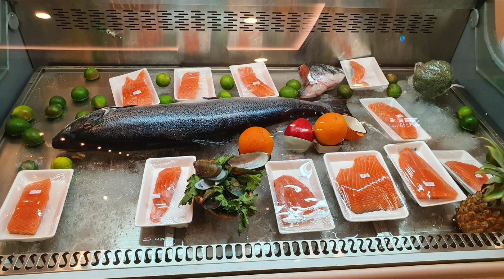
At 17:27 I photographed a Vietmobile SIM card in my hand, in a shop, with the card still in its holder. So I bought a SIM that afternoon. I do not remember where, or the price, or the data package, and I do not show the card, because it prints the number and the card's serial number.
At 18:32 I photographed a map of Vietnam painted on the wall of a hostel in the city, with pins on Sapa, Ha Giang, Ba Be, Ha Long, Mai Chau, Pu Luong, Ninh Binh, Phong Nha, Hue, Da Nang, Hoi An, Nha Trang, Dalat, Mui Ne and Saigon. Next to it hung a board of the tours the hostel sold: Ha Long Bay for two or three days, Cat Ba, Sapa with trekking, Ninh Binh and Mai Chau, and a home stay. The board lists no prices. I do not say which hostel it was, and I do not remember why I was there.
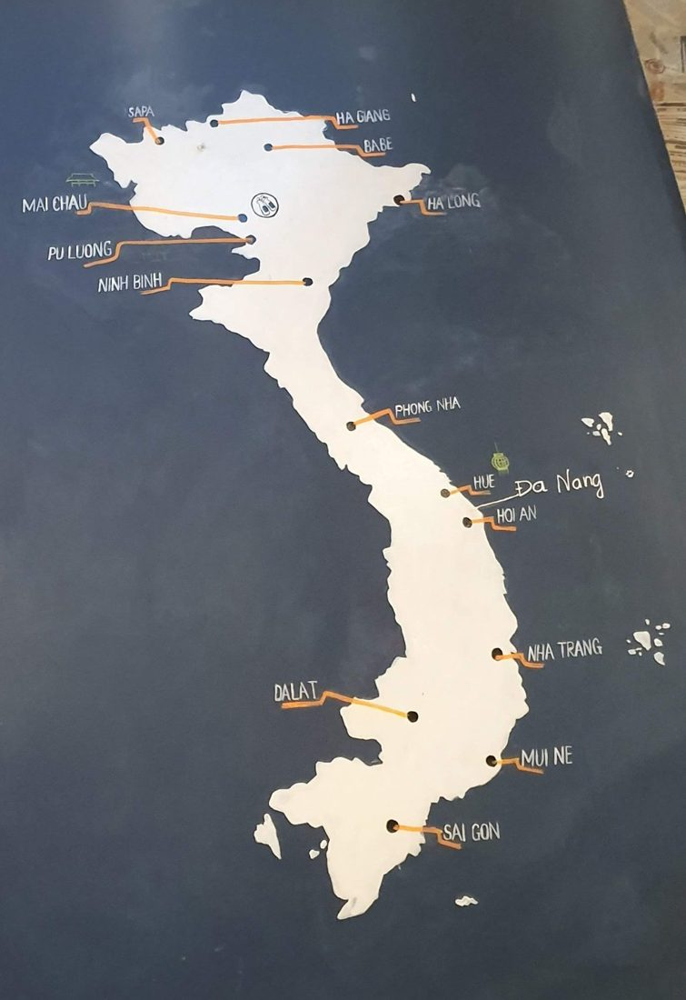
The train ticket
At 19:10 I took a screenshot of my booking on the Baolau site: Hanoi to Sapa on Saturday, October 5, 2019, train SP1, departing at 21:35, one soft seat. The seat was 155,000 dong, the service fee 40,000 and the processing fee 13,000, which made 208,000 dong in all. I booked about two and a half hours before the train left, and it was not sold out. I leave out my name and ticket number.
How I got to the station: I took a Grab again. I do not remember the fare, or which gate I used. The train SP1 left Hanoi at 21:35, according to my booking, and the timetable I found says it reaches Lao Cai at about 05:30 the next morning.
The night train
At 21:44, nine minutes after the booked departure, I filmed a short video through the window. It shows a bridge over a wide river at night, with the lights of the city reflected in the water. I think it is the Long Bien Bridge over the Red River, but I have not confirmed it, and I did not check the pin. Trains still cross it, with a railway in the middle and lanes for motorbikes and bicycles on both sides, according to Vietnam Airlines' guide. VnExpress says trains cross it at no more than 15 km/h, and a timetable site lists Gia Lam, on the far bank, as a stop of the Lao Cai trains. I do not show the video.
At 21:45 I took a blurred photo through the same window, of a lit stretch of riverbank with a market, red and blue neon, and the reflections of the carriage. I took a few more photos inside the carriage: the seats in blue and green imitation leather, luggage racks along both walls with bags piled on them, curtains at the windows, and a lit aisle. Some show other passengers, so I do not show them. I leave in only a selfie of me in my seat, with my backpack and its combination lock beside me.

From that night I have two more items in Google Photos, at 23:23 and 23:29, that I did not use here. That is all I have from the night on the train.
October 6: Lao Cai and Sapa
The train reached Lao Cai in the early morning, around 05:30 by the timetable I found. From the station I took a shared minibus up to Sapa. I do not remember the price, the company, how long it took or where it left me. At 06:52 I filmed a 28-second walk through the town center, in the early light, with pine trees, notice boards, parked minibuses and a yellow bus. Google Photos places it near the Stone Church, as an estimate, and I think it was soon after I arrived. I do not show it, because a woman in traditional dress walks through the frame.
I slept at a boutique hotel in the center, and I recommend it. I do not give its name, and I do not remember what I paid. The room had a double bed, a wooden floor and a balcony. I photographed the view from the balcony, over a car park with minibuses and motorbikes, white colonial-style buildings with red roofs, a building with a golden dome in the middle of the town, and cloud sitting low on the mountains. I also photographed a small mini-fridge in the room, and I show no picture of it.


At 15:18 I filmed a two-minute-and-25-second tour of the hotel, with its lobby, a staircase, the room, the bathroom and a water heater. At 15:51 I photographed Sapa Lake in sun, with a pedal boat, white houses with red roofs and mountains behind, and green algae spread over the water in front of me. At 17:26 I photographed the central square in the evening, where a few teenagers were playing football, and filmed a slow turn around it. There is a stone church at the edge of the square, with large steps like an amphitheater in front of it. The guides say the Stone Church was built in 1895 and is free to enter, and that Ham Rong mountain starts right behind it. I do not remember going in.

I ate twice that day, as far as the photos show. A coconut served whole with a straw on a wooden table, in a restaurant with a framed painting on the wall, and spaghetti bolognese with a sprig of mint on a white plate, in an open-air restaurant. I do not know where either was or what time, and I do not remember the prices. At 20:36 I photographed the lit center of town from the hotel, and at 22:13 the lake at night, with a glowing structure in the middle of the shore and people walking on the promenade. At 23:54 I took a selfie in front of a coffee shop's glass door, and Google Photos pins it at Sa Pa Lake as an estimate. In the evening I also watched a film on a hotel television, with Vietnamese subtitles. I do not show it.
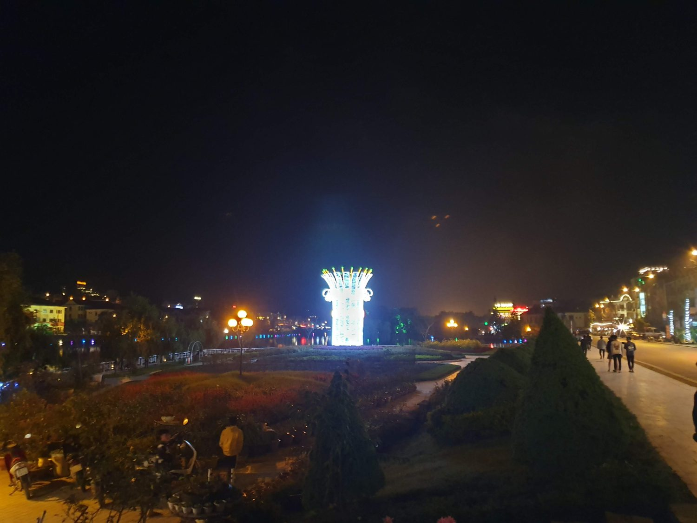
October 7: the Love Waterfall and Fansipan
On October 7 I did two things outside the town: a waterfall in the late morning and the Fansipan cable car in the afternoon. I do not remember how I got to either of them, and I do not remember what I paid at either. The times are my phone's clock, shown by Google Photos in GMT+07:00.
At 08:46 I photographed breakfast on a wooden table: an omelette with tomato and cucumber, half a baguette, a pot of Lipton tea and a few bottles of sauce. I do not know where it was or what it cost. At 11:37 I photographed the town from a window, and I do not show it, because it shows the signs of shops and a hotel.
The Love Waterfall
At 12:01 I filmed a short video of a road in the hills, with roadworks, from something that was moving. I do not remember what I was riding in. The waterfall is the Love Waterfall (Thác Tình Yêu): a sign on the rock beside it reads TÌNH YÊU, and Google Photos pins my photos at Suối Vàng and Thác Tình Yêu, as an estimate. At 12:45 I photographed the stone path that leads to it, and I do not show it, because a man walks on it. At 12:54 I photographed the fall with the sign, and at 13:25 I filmed the pool, with other people in the frame, so I do not show it.

At 13:39 I photographed the pool and the fall with no one in it. I went into the water, and it was very cold, almost freezing. My last photos there are from 14:22 and 14:26, of the fall with a climber near the top, and of a river with people walking along it. So my photos at the waterfall run from 12:45 to 14:26.

Fansipan, by cable car
At 15:58 I filmed a car park at the lower station of Sun World Fansipan Legend, and at 16:01 I photographed the square next to it, with a tall cone covered in black-and-white patterns and ribbons. I do not show the photo, because a man walks through it, and I do not show the video. At 16:07 I photographed a tank with sturgeon, and at 16:19 a temple complex at the foot of the mountain. I do not remember what the complex is called. I remember being asked, in the temples at Fansipan, not to take photos with flash. I did not see a sign about it, so I write it from memory and not as a rule; ask on the spot.
By my photos I rode the cable car up between about 16:25 and 16:40. I took a selfie in the cabin at 16:25, and others of the cables, of a red cabin passing on the other line, and of the town of Sapa lying in the valley in the late sun. At 16:30 I took a selfie with another person in the cabin, and I do not show it. The glass is scratched and hazy in places, so the first photos are soft. At 16:48 I filmed 23 seconds at the top, and Google Photos pins my photos from 16:50 beside the summit of Fansipan, as an estimate.
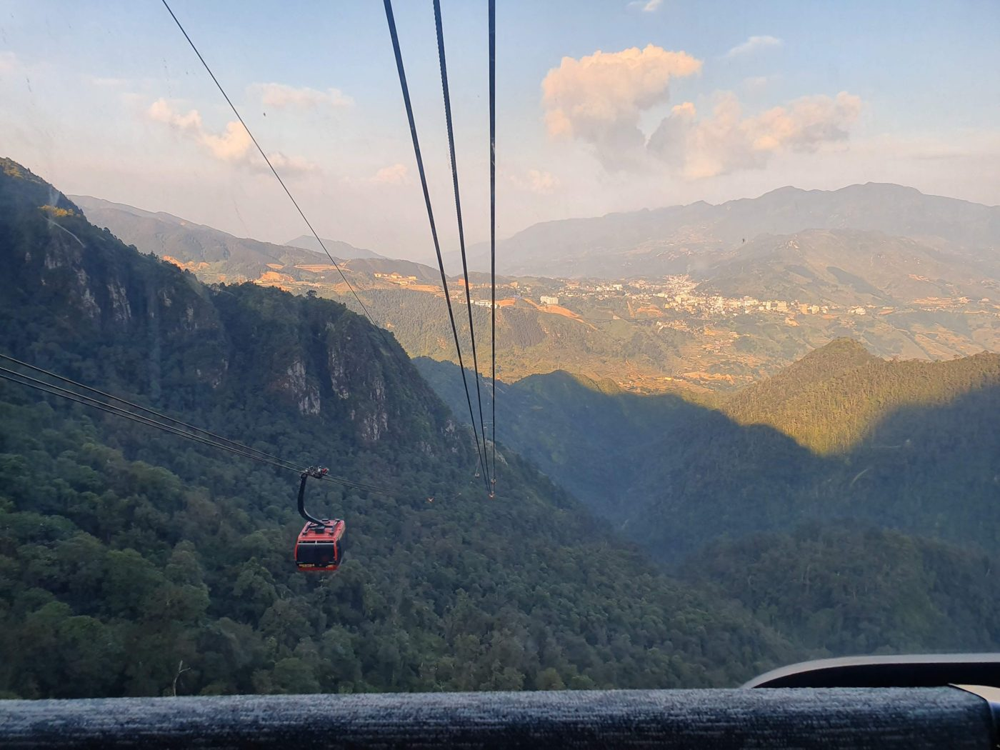
At the top I photographed a terrace with a glass railing above a sea of cloud (16:50), a stone tower with a two-tier pagoda roof, with Sapa far below (16:52), a wooden hall with carved stone beasts on its steps and an altar inside (16:52), and a stone gate at the top of a wide flight of steps, with a name on its beam that I read as THANH VÂN ĐẮC LỘ. At 16:59 I photographed a huge bronze seated Buddha from its base, so I climbed the steps up to it. At 17:00 and 17:02 I filmed a walk around its terrace and down to the base, where a red carpet leads to an entrance covered in yellow flowers, with a guard in white at the door. I do not show those videos.
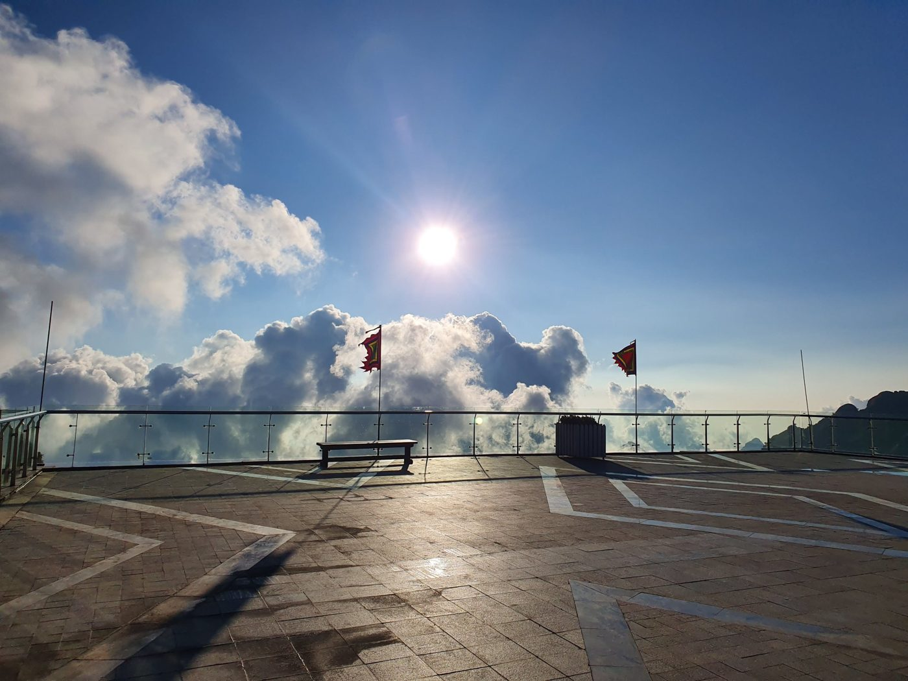


At 17:07 and 17:08 I photographed a hall with a glass pagoda, an altar with a golden Buddha, fruit and yellow flowers, all behind glass. I think it is inside the base of the statue, because I filmed the entrance five minutes earlier, but I did not check. I was at the top from at least 16:48 to 17:16, which is when I took the last photos I have there: the sun behind a cloud over the ridges, and a selfie at the stone gate, which I do not show because two men walk beside me.
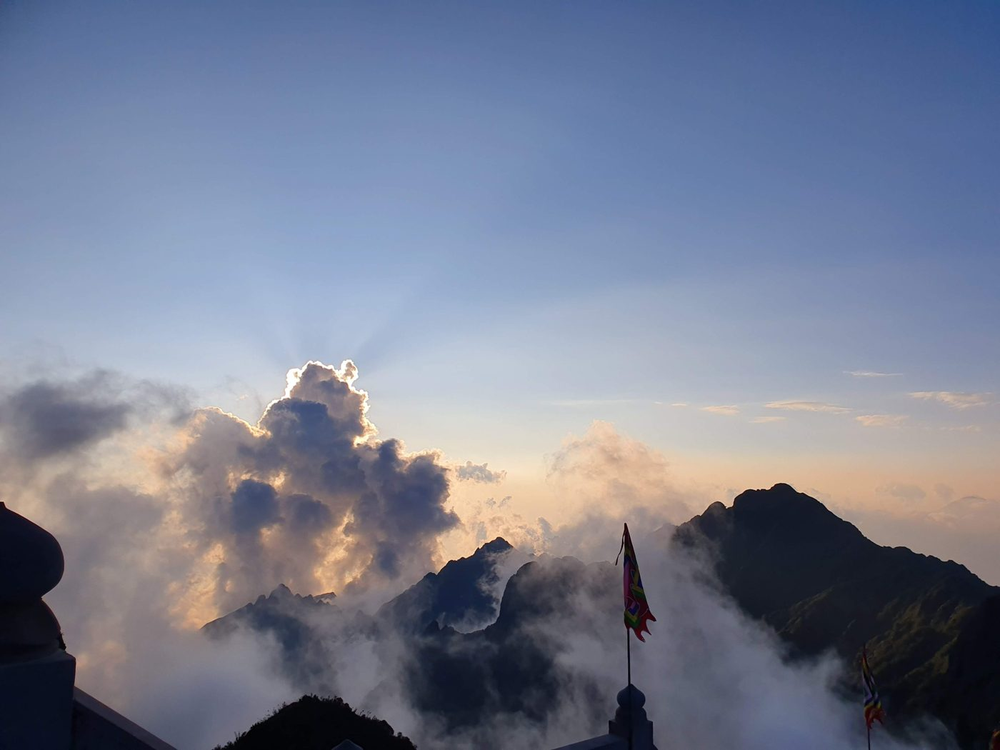
I do not remember how I came down, or how long it took. One hazy photo from a cabin, with no time on it, shows terraces below, and it is probably from the way down. At 17:47 I was back at the sign of Sun World Fansipan Legend at the bottom, where Google Photos pins the photo, and at 17:52 I photographed a cone covered in black-and-white patterns, with pink paper umbrellas and ribbons. I do not remember how I got back to the town that evening.
What it costs today. Several ticket sites list the standard round-trip cable car from 1 January 2026 at 850,000 dong for an adult and 550,000 for a child between 1 and 1.4 meters, with children under 1 meter free. One of them says it is based on official Sun World pricing. A funicular up the last stretch is listed separately, and the Muong Hoa train from the town to the lower station is listed at 200,000 dong round trip. I did not check Sun World's own price page. Check the hours too: some listings show the last ride up in the early afternoon, and in 2019 I rode up at 16:25. I did not note whether I think it was worth it, so I give no verdict.
The waterfall today. It is about 14 km from Sapa. The entrance is 70,000 dong for adults and 30,000 for children, paid in cash at the gate, and it is open from 09:00 to 17:00. The path is paved and about 1.5 km long, 20 to 30 minutes each way. You can park near the entrance, and none of the sources I found gives a parking fee. A guide lists a taxi or scooter from the town at 125,000 to 250,000 dong one way. I do not remember paying for either the entrance or parking.
October 8: Cat Cat village, then a night in a local home
On October 8 I spent the day around Cat Cat village (Cát Cát), a Black Hmong village in a valley just below Sapa. I checked Google Photos' pins on the shelter, the waterfall, the knife stall and the pond, and all of them sit on the Cat Cat label. In the evening I was at a local guide's home for the night, which Google Photos pins in the Tả Phìn area, as an estimate. I went by rented scooter, and I do not remember what any of it cost.
At 11:41 I photographed the dashboard of a scooter, from the rider's seat: a speedometer, a mirror, cloud-covered mountains and a green valley, with rubbish along the edge of the road. Google Photos pins it in the center of Sapa, near the Stone Church. It was a rented scooter. I do not remember where I rented it or what it cost, and I rode it with an International Driving Permit for motorcycles.
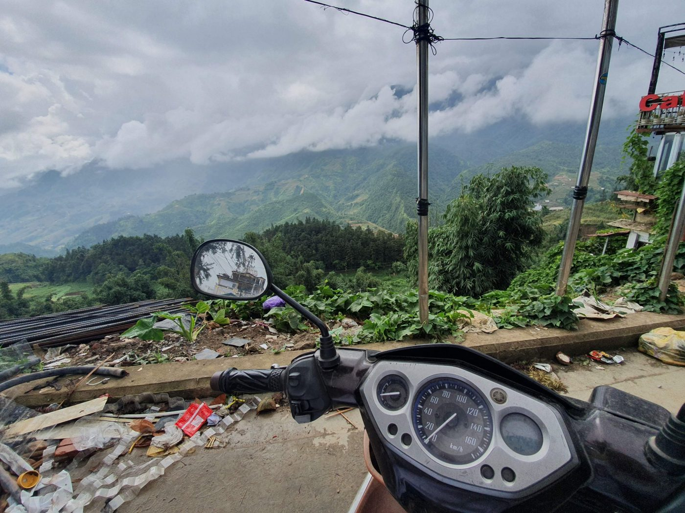
At 11:58 I filmed a 64-second walk down a stone path with a wooden railing, past huts with straw roofs and blue tarpaulins, a bamboo gate with a small wooden roof, and plastic chairs at the side of the path. A person passes in the frame, so I do not show it. At 12:01 I took a selfie at a wooden railing above a green slope, and at 12:04 a photo of a small wooden shelter on a stone path above a terraced valley. The pin for the shelter is on the Cat Cat label.
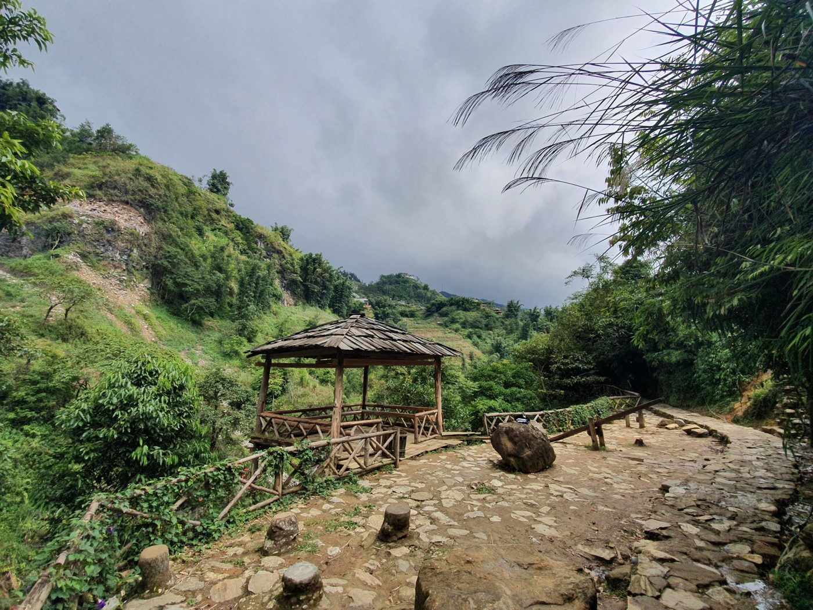
Between 12:11 and 12:17 I filmed four videos. Three show the village from a high point and from the wooden walkways: huts with straw and plank roofs, blue tarpaulins, a long wooden bridge across a muddy brown river with a small blue house at its end, bamboo water wheels, and a large bamboo structure over the river shaped like a hand. The fourth starts in a garden with a wooden bridge and a small sign by a toilet block, and then goes into a hut set up as a display of village life, with corn cobs hanging, bundles of straw and rice, baskets, pumpkins, costumes and blankets, and wooden signs in Vietnamese. I do not show the videos. At 12:45 I photographed the river from a wooden railing hung with lights and vine leaves, with water wheels and a covered bridge, and women in colorful costumes posing in a hammock in the water. I do not show it, because of the women.
At 13:39 I photographed the river from the bank, with a long wooden bridge, huts on stilts among the trees and the cloud low on the hills. At 13:40 and 13:42 I took more photos, from a wooden walkway with red flowers and from above the river, and I do not show them, because people walk in them. At 13:45 I filmed 21 seconds from a small red bridge over a wide, stepped waterfall with brown water. At 13:49 I took a selfie above a gorge, with cables overhead and a stone building with a tiled roof by the stream below. I do not know what that building is.
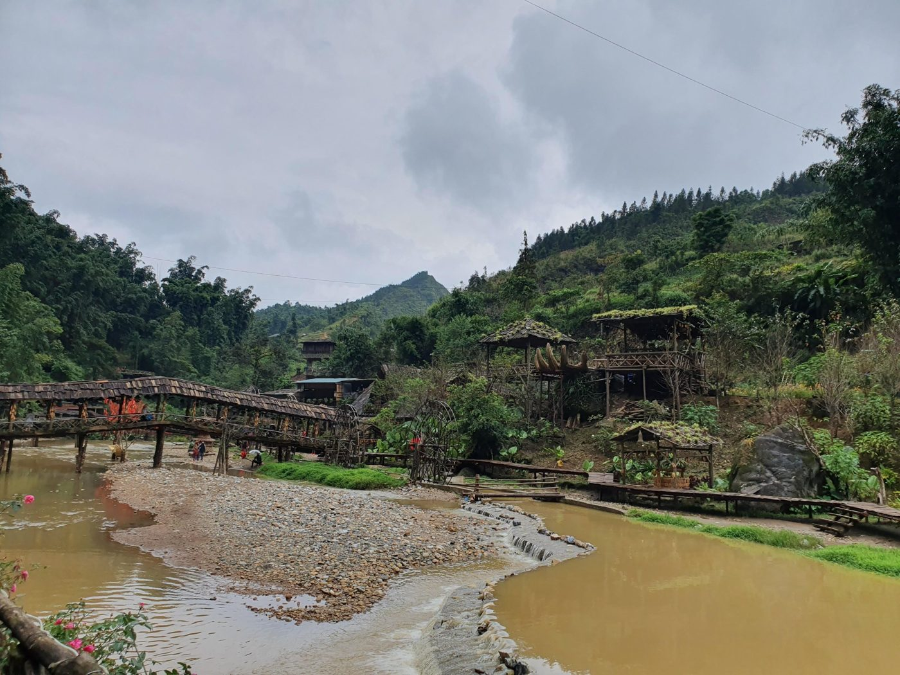
At 14:19 I photographed what looks like a pond covered with floating green plants, with a winding wooden walkway across it, two trees hung with colored ribbons, a field of yellow-orange flowers behind them, and tall wooden bird-house towers at the edge. I do not know what this place is called, or whether it is part of the village. At 14:21 I photographed a field of red flowers in front of a pointed green mountain, with terraces below it.
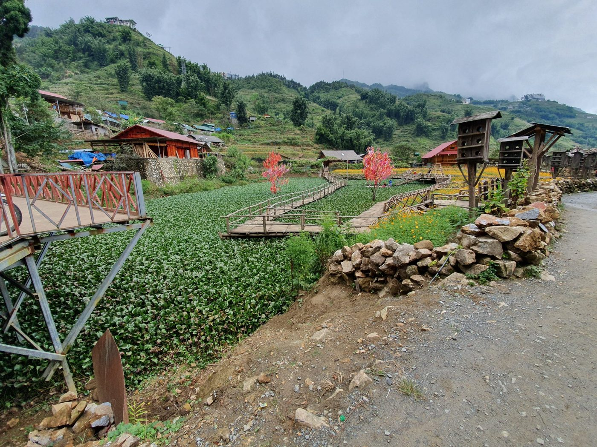
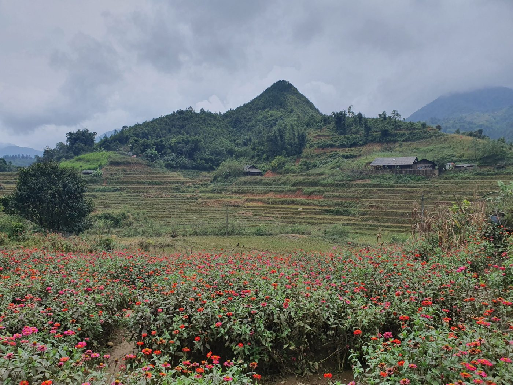
At 14:28 and 14:31 I filmed two videos of the village and the terraces after the rice harvest, with red- and blue-roofed houses on the slope, cloud over the ridges, and a flock of white birds, probably geese or ducks, in a cut field. At 14:41 and 14:42 I took two selfies with a small brown-and-white dog in a narrow lane with stone steps, and I show one.
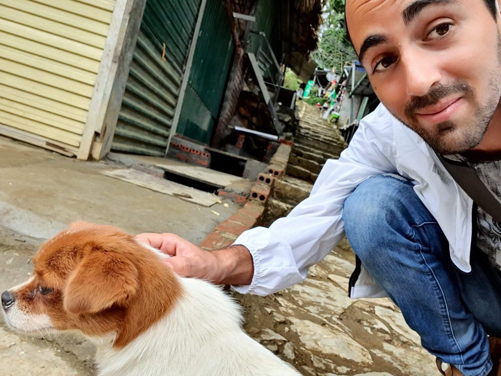
At 14:50 and in the minutes after it I photographed a waterfall that falls in two streams down a rock face, with brown, muddy water at its base, and a stream with small falls above it. Google Photos' pin for it is on the Cat Cat label. I do not know its name. I took a selfie in front of it at 14:51. According to today's sources the Cat Cat ticket includes the waterfall, and I do not remember what I paid in 2019.
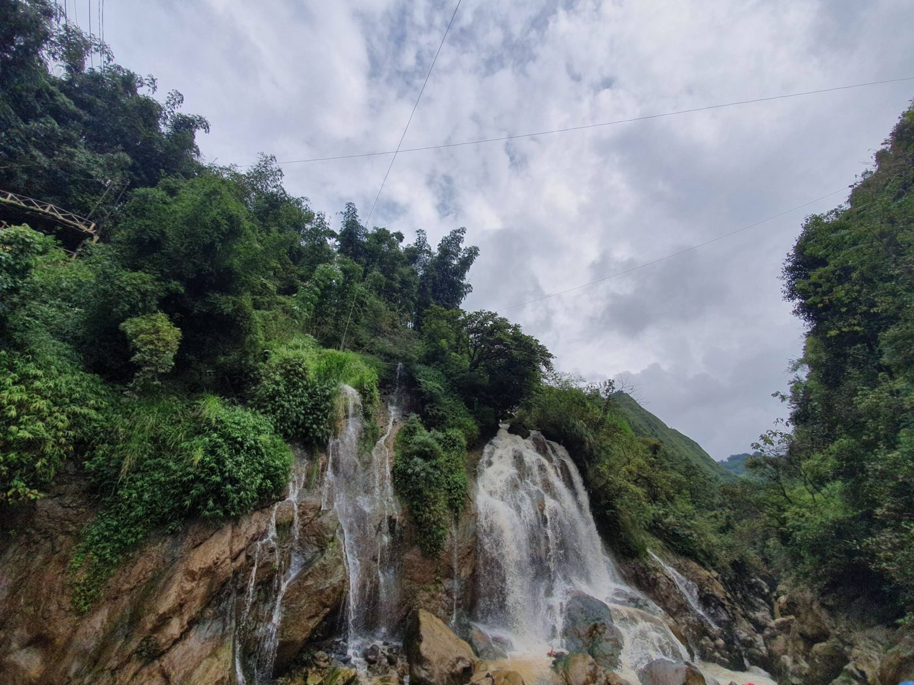
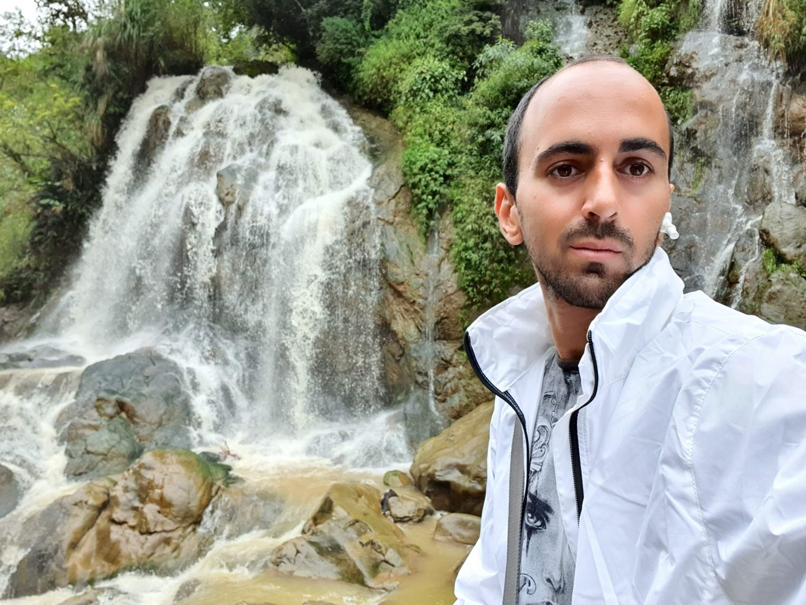
At 14:57 I photographed a table of knives, machetes and swords, with a long carved case on the wall behind it. A paper sign on the wall reads CHỤP ẢNH 20K, TAKE A PHOTO 1 USD, so a stall asked 20,000 dong, or one dollar, to photograph its goods. I did not pay.
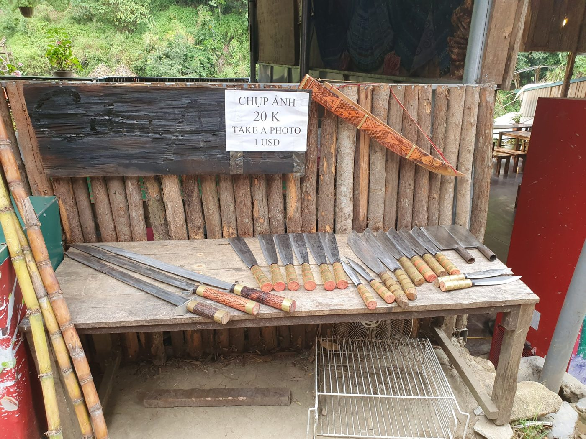
At 15:16 I photographed the valley from a viewpoint, with terraces in the foreground, a village below and a cable car line crossing the valley with cabins hanging on it. I think it is the line of the Fansipan cable car, but I did not check. At 15:33 I photographed cloudy valleys from beside a building site. I did not check that pin, and I do not show the photo.
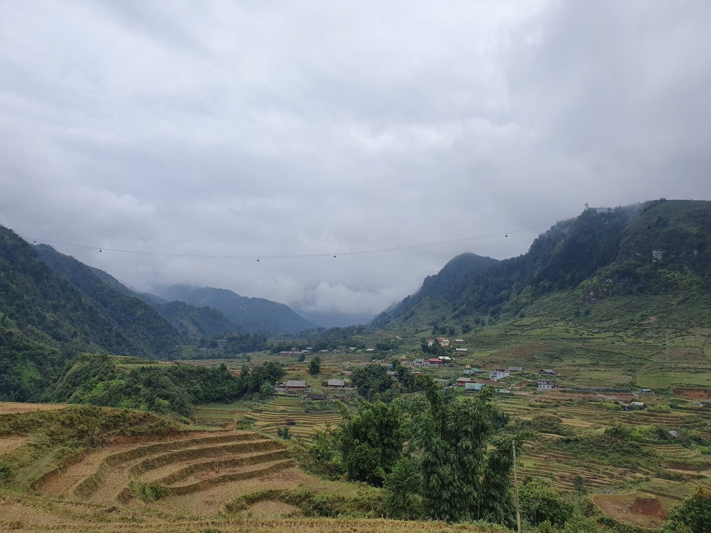
Four photos from that day have no time, only the date in their file names, because they came through WhatsApp. One is a white dog with a brown head licking a wooden bench. Two show a glass of milk tea with a bamboo straw, one of them a selfie of me holding it, and behind it a menu board with prices that read 25K, 35K and 45K, which I take to be thousands of dong. It was in the area. I do not remember the café's name or what I paid. The fourth shows three posters on a shop's wall: one names the Cát Cát essential-oil workshop, and another reads 'Thank you for supporting local product', with soaps and oils in boxes. I did not buy anything there.
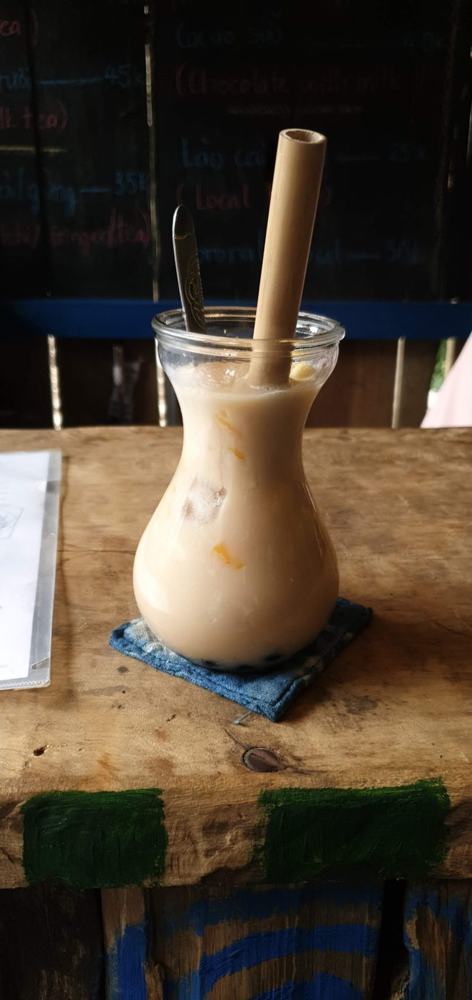
The night at a local guide's home
In the evening I stayed the night at the home of a local woman who guides in the area. The Israeli travel site Lametayel calls such a guide 'Mama', and that is the name I know her by. Google Photos pins my selfie with her at 17:46 in the Tả Phìn area, as an estimate. I do not show the selfie or any other photo of her, and I do not give an address. I found her through a recommendation on Facebook, and I met her in the evening of that day. We rode to her home on the scooter.
At 17:45 I filmed 31 seconds in the dusk: a dirt path in the mist between corrugated-metal buildings, laundry hanging, and then a large hall with corrugated walls and roof and one bright bulb, with dishes hanging on the wall, red and blue buckets and plastic stools, and a few people moving in the half dark. At 17:46 I filmed an open fire in an iron frame on the floor of the hall, with burning logs, a big black kettle, a purple gas cylinder, pots and a thermos, and several people sitting on the floor in traditional dress. At 18:18 I filmed a pot on that fire with a whole chicken in it. They took a live chicken and cooked the whole meal from scratch, on the spot.
At 20:47 I took two selfies in an embroidered cap and a dark blue printed scarf, under the corrugated roof. I do not remember whose they were. At 21:16 I filmed the hall again, with several members of the family, women and children, around the fire and the kitchen corner. At 21:34 I photographed my bed, and at 21:37 I filmed the room: a bed under a white mosquito net with flowered blankets, clothes hanging on the wall and on plastic chairs, a ceiling of orange tarpaulin and walls of corrugated sheet. I do not see doors in the video, only curtains and mosquito nets. I show none of these, because it is the family's home, with their things and their children.
What it included. What I had was a bed, meals and the guiding. I do not remember what I paid, and I do not recommend it as I did it. It was nice, but it is more adventurous to do it alone. I spent the day at Cat Cat on my own, and she guided me only from that evening on.
What it costs today. Cat Cat's entrance is listed at 150,000 dong for adults and 70,000 for children between 1 and 1.4 meters, and the waterfall is included in the ticket. Opening hours differ between sources, from about 06:00 or 07:00 to 17:30 or 18:00. One guide gives the distance from Sapa as 2 to 3 km and says to plan for 2 to 3 hours. A taxi from the town is listed at 80,000 to 120,000 dong one way, and at the second gate an electric cart down to the village costs 10,000 dong. The Dutch edition of a tourism site puts the walk down from the center at 25 to 35 minutes, downhill. Reviewers differ: one on Klook calls the village a commercialized tourist park, one on Wanderlog complains about the entrance fee and the price of transport from the car park, and another says it still gives a glimpse of local culture. I did not think Cat Cat was worth it.
A scooter today. Local Vietnam lists an automatic scooter at 120,000 to 180,000 dong a day and a semi-automatic motorbike at 150,000 to 200,000, and recommends a semi-automatic or manual one on the mountain roads. Vietnamtourism says an International Driving Permit issued under the 1968 convention is valid, that most shops do not ask for a license, that the fine for riding without a valid license starts at 2,000,000 dong and can reach 6,000,000, and that police can impound the bike. I do not remember where I rented mine or what it cost. I had an International Driving Permit for motorcycles.
A guided night today. Booking sites list a two-day trek around Sapa with a local guide and a night in a family homestay from about 38 dollars per adult on Orbitz to about 50 on Travelocity, and the inclusions differ: one lists dinner and the guide, another lists all meals and the return transport. A 2026 scam guide for Sapa rates guide commissions and pressure to buy in the villages as a medium risk. These are listings of tours, not what the home I stayed in charges, and I did not find a price for a guide like the one I stayed with.
October 9: a day on a scooter, a temple and a show at the cable car station
On Wednesday, October 9, I spent the day on a scooter north and east of Sapa. I do not remember whether it was the same scooter I rented the day before. Google Photos pins the morning in the Tả Phìn area, the late morning and noon beside the label Sun World Fansipan Legend, the coffee in the town of Sapa, close to the Stone Church, and the evening at the Lao Cai railway station, about 35 km below the town. The times are my phone's clock, GMT+07:00.
The first photo of the day is from 08:57, a view of a green valley with terraces and a concrete road at the edge. Google Photos pins it in the Tả Phìn area, the same area where it pins the night of October 8. I slept at the guide's home and rode out from there on the scooter. That day the guide took me and another woman on a tour, and I do not remember how the others traveled, or whether I paid anything extra for the day. Between 09:00 and 09:08 I took more photos of the scooter on the narrow concrete road above the valley, and I show none of them, because one of the rear shots shows the license plate.
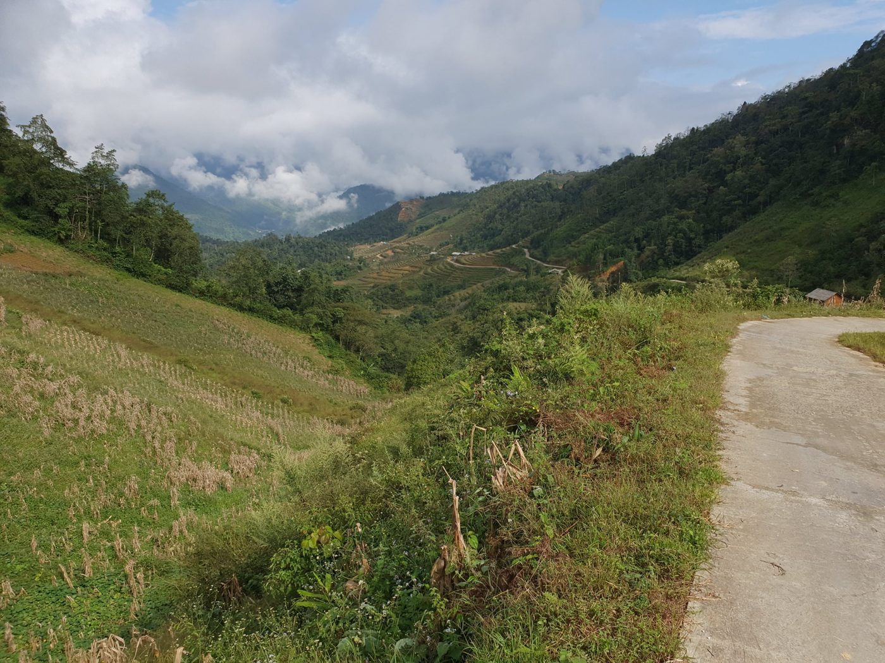
At 09:31 and 09:33 I filmed two short videos of a school courtyard, with many children, bunting across the yard and a scooter passing through. I do not show them, because of the children. I do not remember whether I stopped there on purpose, and I think I did not pay anything. I do not know which school it was, and I did not check the pin. At 09:43 I photographed a village gate over the road, with a thatched roof on two stone-clad posts. One plaque on it reads Thổ cẩm Hmong, which is Hmong brocade, and the other carries the name and phone number of a homestay, which I covered in the photo. Google Photos pins it in the Tả Phìn area, between the labels 'Bản Tả Phìn' and 'Tu Viện Tả Phìn', as an estimate.
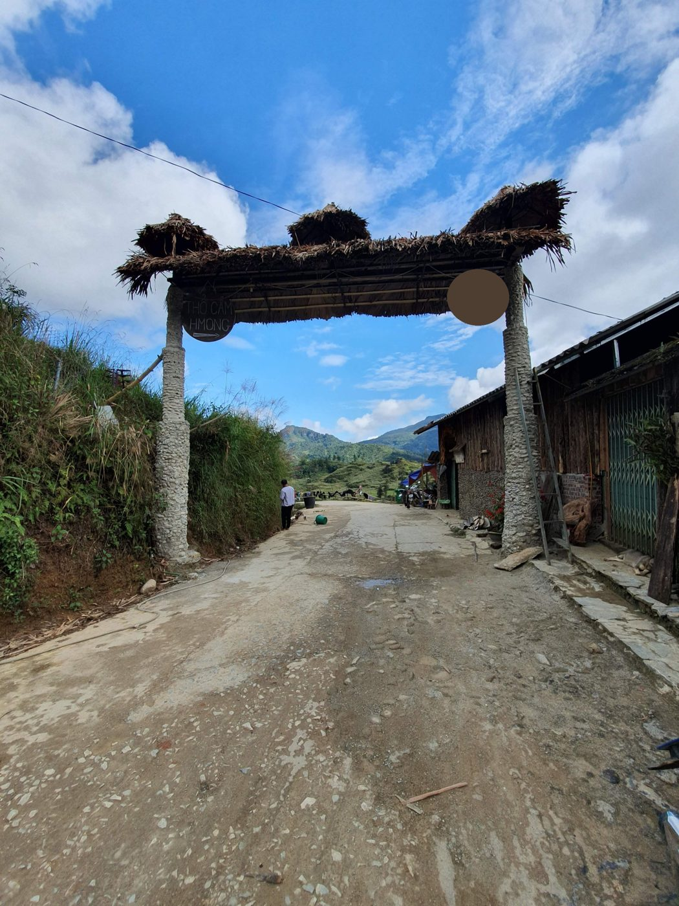
Between 09:50 and 09:57 I stopped at a viewpoint over terraced fields after the rice harvest, with a stone wall, a house with a plank roof and a fence post at the edge of the road, and I took a series of photos of the valley and of me with the scooter. The last of them, at 09:57, is pinned in the Tả Phìn commune area. I show two.
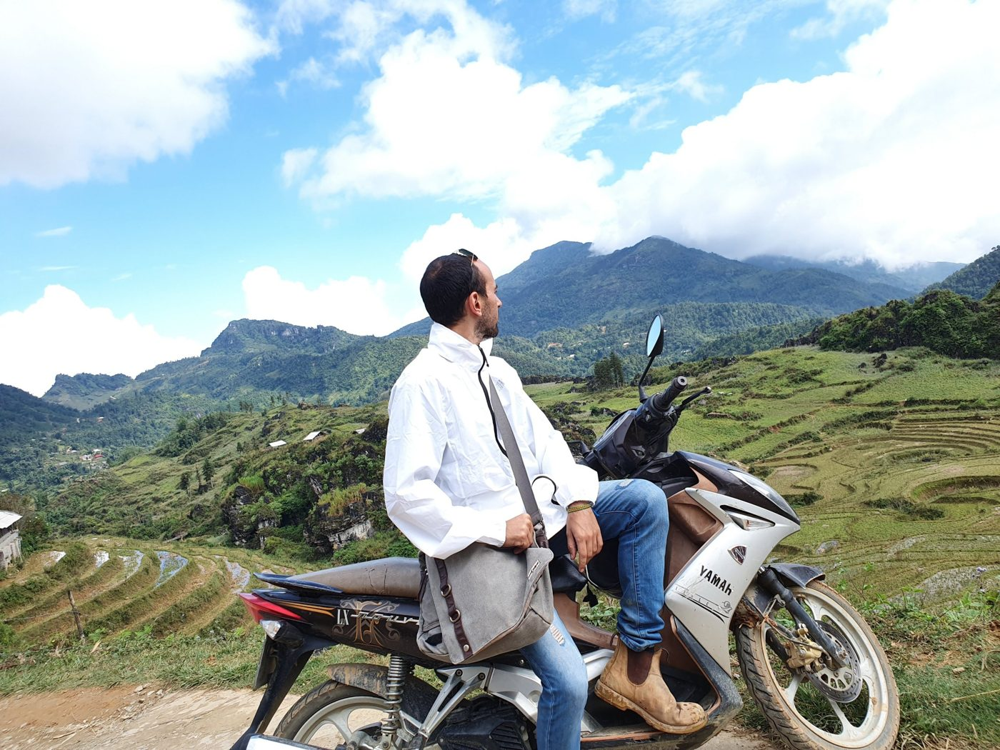
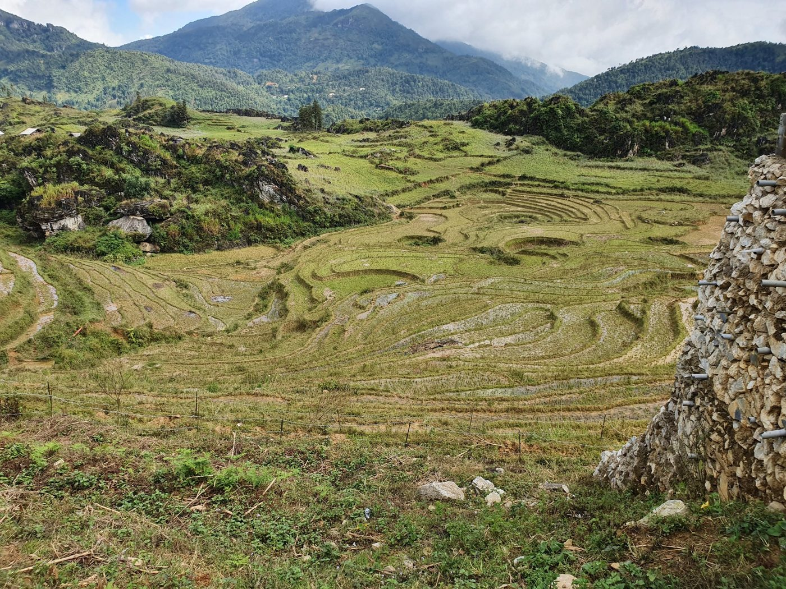
At 10:05 I filmed a seven-minute ride from the handlebars, with the dashboard in front, a concrete or dirt road, a drainage ditch beside it, thatched huts and other scooters. In part of the video the lens is covered, probably by a finger. I do not know which road it was. Because it falls between the viewpoint and the temple, I think it is the road back toward the Fansipan area, and I have not confirmed it. I do not show it.
At 10:48 I took two photos at a market, under blue tarpaulins, with stalls of bags of dried goods and stalls of colorful costumes, and I tried on a traditional hat. I think the woman next to me is the other woman on the tour, and I do not show the photos, because she and other people are in them. I do not remember the name of the market, what the hat cost or whether I bought anything, and I did not check the pin.
At 11:04 I photographed a bell pavilion with a double roof of red tiles and carved dragon ends, a white marble standing figure in the front, a stone balustrade carved with a dragon, and yellow marigolds. A man in dark clothes strikes the bell, so I do not show the photo. At 11:05 I filmed 99 seconds in the same place, with halls with gilded roofs and a woman standing at the entrance. At 11:13 I photographed the front of the complex from the square: three halls with red tiles and curved roof ends, a carved stone gate, a white standing figure in the doorway, bonsai pines, wide steps, beds of orange and red flowers, and flags on two poles, one with the Buddhist colors. Google Photos pins both photos beside the label Sun World Fansipan Legend, near 'Bản Xín Chải'.
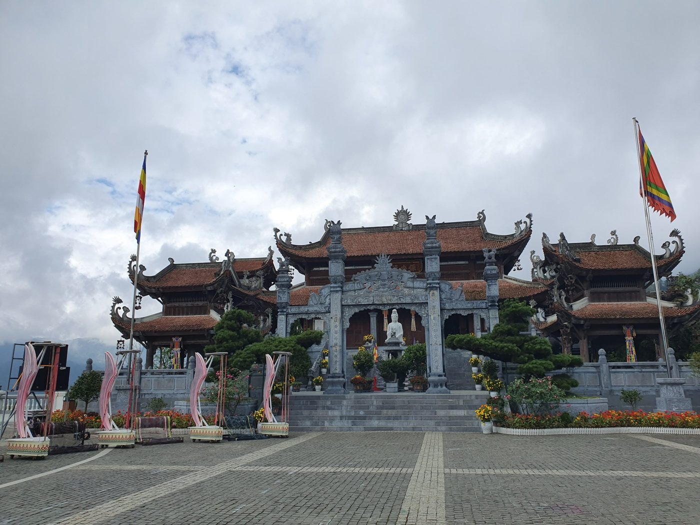
I think this is Bảo An Thiền Tự, the temple hall at the cable car's departure station. I did not read its name there. Sun Paradise Land, which Sun World's operator publishes, calls it the first stop of the spiritual complex, at 1,604 m, and a Vietnamese report on the show I saw there gives 'the Bảo An Thiền Tự hall at the departure station' as one of its two venues. I do not remember whether I came back to this area on purpose, and I think we did not pay for anything that day, neither to enter nor for the show.
The show. From 11:33 to 12:11 I took eight videos and about 15 photos of a performance on the square in front of the temple. A sign above the stage reads Vũ Điệu Trên Mây. That is the show 'Dance on the Clouds', and a Vietnamese press report says it ran at Sun World Fansipan Legend from 13 July to 13 October 2019, with 20-minute shows, on weekdays and Sundays at 09:30 and 11:30, a third show at 14:30 on Fridays and Saturdays, and no show on Tuesdays. October 9 was a Wednesday, so my first video, at 11:33, fits the 11:30 show. The report says the venue was the arrival station's cloud hall or the temple hall at the departure station, depending on the weather.
What I filmed, in order: a circle of visitors around two performers in a traditional pole-pulling game at 11:33, performers in black and red on a green mat at 11:35, a dance in which visitors were invited between long poles at 11:38, a procession carrying cloths in red, blue, purple, yellow and pink over their heads at 11:45, a group dance at 11:48, a dancer in a wide pink and red dress and a net held by the performers at 11:51 and 11:53, a large dance with red ribbons and a group kneeling on red cloths at 11:54, and, at 12:00, hundreds of people in white walking slowly across the square with their palms together. At 12:04 to 12:07 I photographed white-clad dancers in a group, in poses with their arms over their heads, with a man sitting cross-legged on top of a pink structure shaped like a lotus, and people in yellow robes on the temple steps. At 12:10 and 12:11 I took photos and selfies as the performers stood in costume beside visitors. I show none of the videos or photos, because of the faces of the performers and visitors.
I filmed for about 38 minutes, longer than a 20-minute show, so I do not know whether all of it was the show, or whether some of it was a rehearsal or the performers posing for photos at the end. I think we paid nothing for the show or the square. The report I found does not say whether there was a ticket, and I do not know whether it was part of the park's entrance.
At 13:08 I photographed a Vietnamese drip coffee, a small metal filter on a glass in a bowl of hot water, in a café with red sofas and a Japanese-style hanging on the wall, and at 13:10 the same coffee after it had dripped, milky and brown, probably with condensed milk. Google Photos pins it in the town of Sapa, close to the Stone Church, and I could not tell which café it was from the pin. I do not remember its name or what I paid.
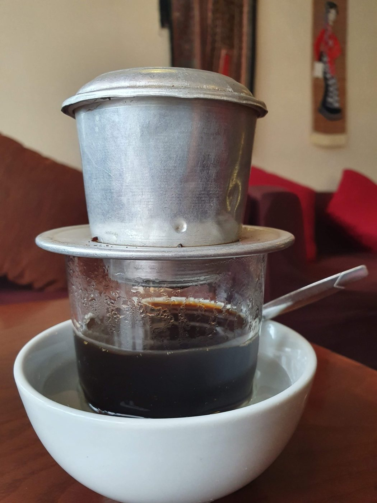
From 13:10 to 21:00 I have no photos or videos, and I do not remember what I did, where I ate or where I left the scooter. At 21:00, four selfies with a small brown-and-white dog, in a café with a green ceiling, crystal chandeliers and gilded wallpaper, and a sign on a shelf that ends in 'ard+2%', which I take to be a surcharge on card payments. Google Photos pins them on the street in front of the Lao Cai railway station, about 35 km below Sapa. I looked at the pin on Google Maps, and there are several cafés and restaurants within a hundred meters of it, so I could not tell which one it was. I do not know why I was in Lao Cai that evening. I slept that night in a hostel in the same area, and I do not give its name.
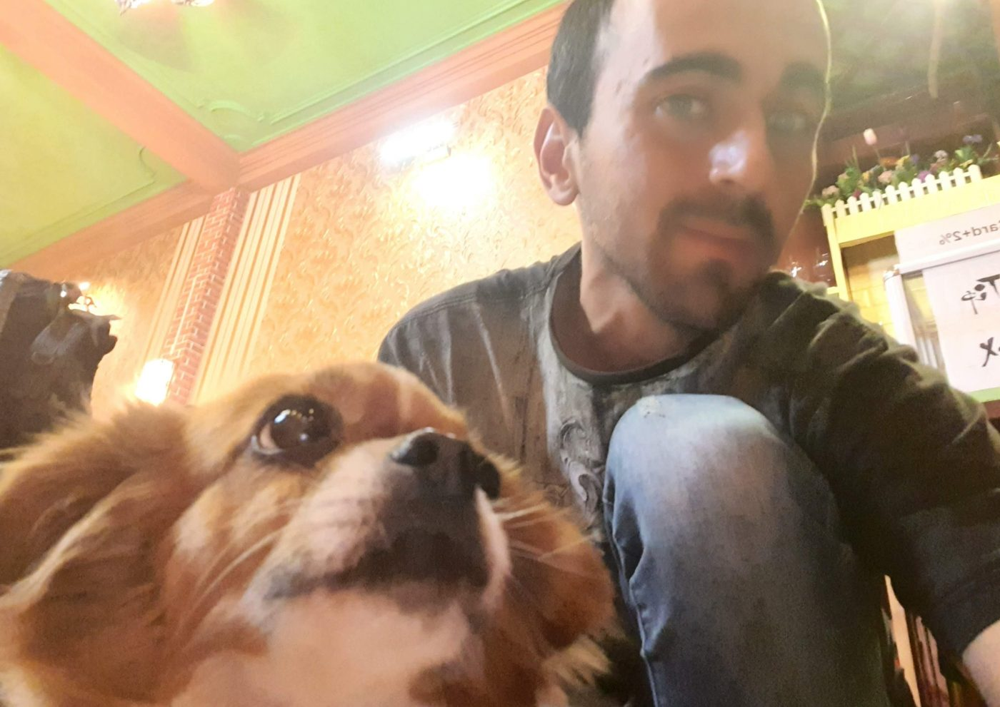
What it costs today. For the scooter, see the prices in the October 8 section. I do not know what I paid for the day's rental, fuel or parking. For the temple complex, the cable car tickets I found list 'Entry to Sun World Fansipan Legend' as part of the ticket, and I found no separate price for the entrance alone, so I cannot give you one. The cable car is listed at 850,000 dong for an adult from 1 January 2026, as above. A coffee in a Sapa café is listed at about 35,000 to 80,000 dong. Adding only what I could price, one day on a scooter at 120,000 to 200,000 dong and one coffee come to about 155,000 to 280,000 dong, without fuel, food or any entrance. The show I saw ended on 13 October 2019. In June 2025 the park launched a different show, 'Sacred Peak Legend', which runs in three places and lasts about 35 minutes, and its operator's site says visitors pay nothing extra to watch it. That is a different show, and I did not see it.
What I recommend, and what I would skip
I recommend Sapa as a beautiful place, and I recommend doing what it offers on your own, not through an organized tour. I stayed in the town and walked around it, to the lake, the square and the viewpoints, and I liked that. What I would skip are the tourist attractions, because in the end they are attractions for tourists, and they are not for everyone. It depends who you ask. I like road trips more, and that is the lens I used. I do not remember the price of anything I did there, so the prices in this page are today's, from the sources below.
October 9, a day on a scooter: what I recommend from this day is to get lost without a guide, on the small roads and viewpoints north of Sapa. I would skip anything that is made to be an attraction for tourists. I do not remember what the day cost, so the prices I give are today's.
October 8, Cat Cat and the night at a local guide's home: I would skip Cat Cat. I did not think it was worth it. The night at the guide's home was nice, but it is more adventurous to do it alone, and I do not recommend booking it the way I did. If you want a homestay, ask what is included and what it costs before you go, because I have no price to give you.
What I would do differently
I would write down the name of the hostel and what the Grab rides, the minibus, the hotel, the scooter and the night at the guide's home cost, because I have none of them. I would book the night train a day earlier in the busy season, because I booked mine two and a half hours before and I do not know what else was left. And for a late-night arrival I would keep a hostel by the airport, as I did, and I would message the hostel before I landed, because the reviews warn that knocking on the door at night is hard.
- Airport to the Old Quarter: Vietnam Airlines gives the 30 km distance. Pholio's guide, verified April 2026 lists Bus 86 at 45,000 dong, Grab at 200,000 to 280,000 and metered taxis at 280,000 to 380,000. Jackfruit Adventure lists Grab at 200,000 to 300,000 dong and Bus 86 at 45 to 60 minutes.
- Hostels by the airport: Hostelworld, MOTOGO and its Danish page list the 24-hour reception and the 500 meters from Terminal 2. Hostelz says it suits an early flight.
- SIM cards: Saily lists the Viettel tourist plan. Vietnamtourism, Wi-Fi and SIM cards in Vietnam lists the airport prices and the passport rule. Roafly lists the Vietnamobile GO10 offer.
- The night train: Vietnamtourism, Hanoi to Sapa, timetable checked on October 21, 2026. Travelchinaguide lists the SP1 departure at 21:35 and the arrival at 05:30. Klook, Family Express has the shuttle reviewer. Baolau says it is an official ticket agent of Vietnam Railways.
- Lao Cai to Sapa and the town: Local Vietnam, North Vietnam, 12Go, Nomads Travel Guide, Stone Church, Nomads Travel Guide, Sapa, Vinpearl, Stone Church, Booking, Sapa.
- The bridge: Vietnam Airlines' guide to Long Bien Bridge, VnExpress and Trainspread's timetable.
- The Love Waterfall: Local Vietnam gives the 70,000 and 30,000 dong fees, the hours and parking near the entrance. Legend Travel Group says cash only, 14 km from Sapa, a 1.5 km paved trail, and a taxi or scooter at 125,000 to 250,000 dong. Asia Mystika, 2026 guide and Jungle Boss agree on the fee and the walk.
- The Fansipan cable car: THAIest lists the prices from 1 January 2026, and Sun Paradise Land and Your Vietnam Travel give the same 850,000 and 550,000 dong. WanderOn lists the Muong Hoa train at 200,000 dong. The funicular prices differ between sources, so I leave them out. Traveloka and Expedia list operating hours that end in the early afternoon.
- Cat Cat village: Vietnamtourism lists the 150,000 dong entrance and the hours. Vietnam Airlines' guide gives the child fee, the taxi fare and the electric cart. WanderOn, checked 11 September 2026 gives the distance and the visit time. Vietnamtourism, Dutch edition gives the walk. VietnamTour.in says the waterfall is included. The reviewers are on Klook and Wanderlog.
- Scooters: Local Vietnam lists the daily prices and the license rule. Vietnamtourism, driving in Vietnam, updated August 29, 2026, lists the fines and says most shops do not check.
- The show and the temple at the cable car station: Báo Văn hóa, on Vũ điệu trên mây gives the 2019 dates, the show times, the Tuesday break and the two venues. Sun World, Dance on the Clouds confirms the English name. Sun Paradise Land, spiritual structures and its pilgrimage guide give Bảo An Thiền Tự at 1,604 m as the first stop. Sun Paradise Land, the 2025 show says visitors pay nothing extra.
- Entry to the park and coffee prices: Headout lists 'Entry to Sun World Fansipan Legend' as part of the cable car ticket. Visit Sapa, cafés guide lists drinks in Sapa cafés at 35,000 to 80,000 dong, and Impress Travel lists an egg coffee at 65,000 dong.
- Guided overnight treks: Orbitz, Expedia, Travelocity, Headout and the Tabiji Sapa scam guide.
These are prices and notes as listed today, not what I paid, except where I say they are from my booking in 2019.
What I do not remember
I do not remember the airline, the flight time, when we landed, the name of the hostel by the airport or what it cost, what the two Grab rides cost, where I bought the SIM card or what it cost, where the salmon case was or whether I ate there, why I was in the hostel with the map, which gate I used at the station, the company and price of the minibus, the name of the hotel and what I paid, where I ate the coconut and the pasta, whether the bridge is the Long Bien Bridge, or what the two photos at 23:23 and 23:29 show. For October 7 I do not remember where I had breakfast, how I got to the waterfall and back, what the entrance, the car park and the cable car cost, how long I stayed at the top, how I came down, what the temple complex at the lower station is called, which I give only as a guess in the October 9 section, whether the hall with the glass pagoda is inside the Buddha's base, or how I got back to Sapa that evening. For October 8 I do not remember where I rented the scooter or what it cost, what I paid for the entrance, what the pond with the ribbon trees is called, what the stone building by the stream is, the name of the café or what I paid for the milk tea, what I paid for the night and the meals, or whose the cap and the scarf were. For October 9 I do not remember whether I stopped at the school on purpose or which school it was, how the guide and the other woman traveled, what the day cost, where the market was or what the hat cost, whether I came back to the temple area on purpose, whether there was a ticket for the temple or the show, the name of the café in Sapa or what the coffee cost, what I did between 13:10 and 21:00, why I was in Lao Cai that evening, or which café the dog was in.